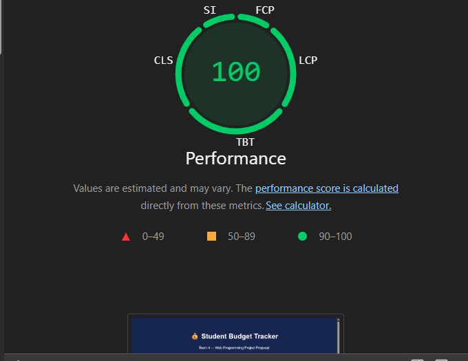
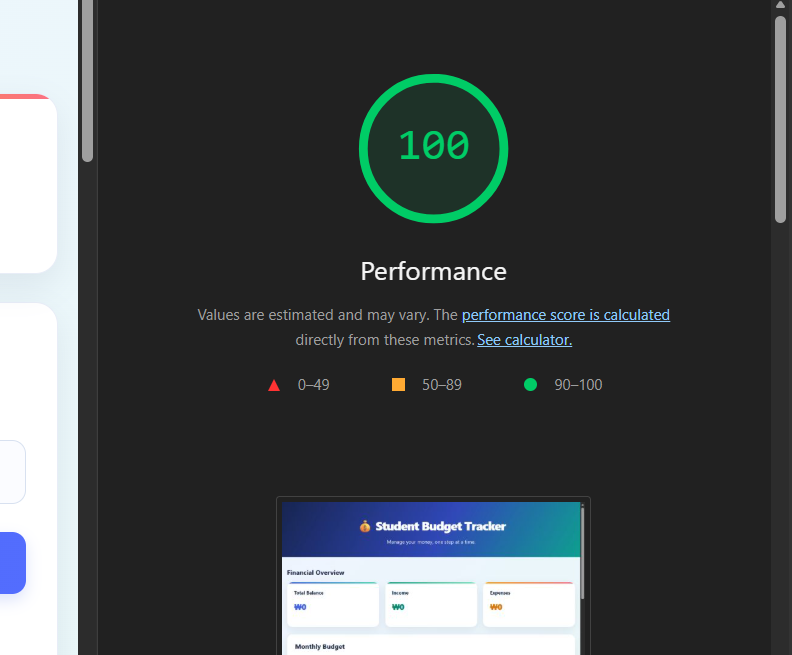
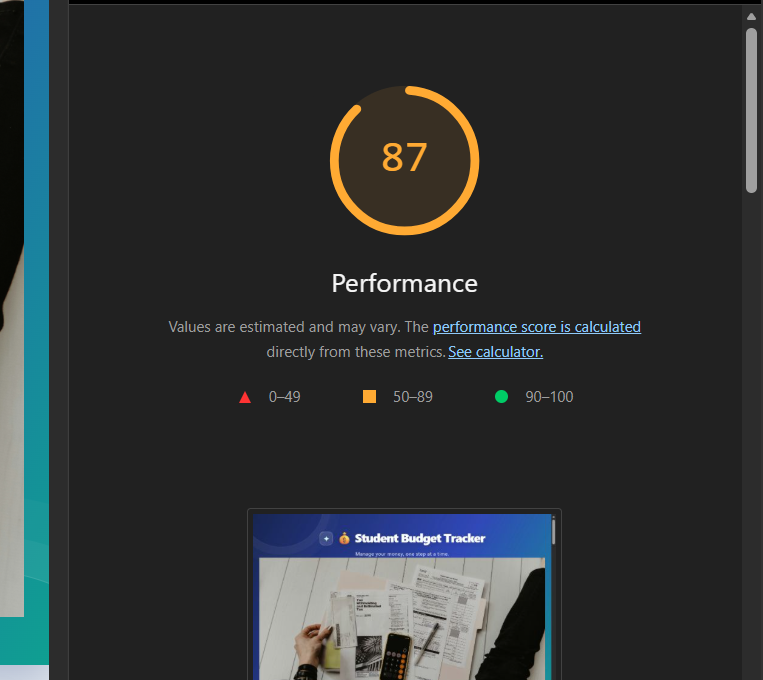
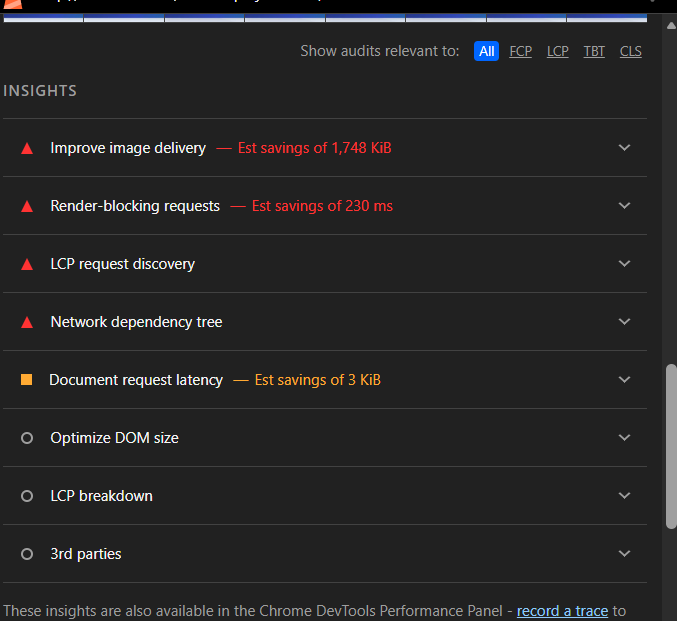

Student: Pandey Aayush · Student ID: 202537201
Project: Student Budget Tracker · Web Programming
1. Introduction
This report documents a Lighthouse performance review of the Student Budget Tracker. The work includes an official deployed-site run, a temporary local test, review of the opportunities shown by Lighthouse, and a summary of optimization techniques relevant to the project.
Course archive: GitHub repository
Group project: Student Budget Tracker proposal
2. Official Lighthouse Performance Scores
Both supplied official screenshots show a Performance score of 100. The measured score therefore remained unchanged (0-point difference); this report does not claim a score increase.
Screenshot 1 · Before optimization
Official deployed-site audit · 100/100

Screenshot 4 · After optimization
Final project audit · 100/100

3. Temporary Test and Improvement Opportunities
The local practice check shown in the supplied screenshot produced a separate score of 87. It is recorded separately from the two official deployed-site scores above.
Screenshot 2 · Temporary local check
Local practice audit · 87/100

Screenshot 3 · Lighthouse opportunities
Image delivery and rendering recommendations

Findings visible in the Lighthouse report
Improve image delivery
The report estimated potential savings of 1,748 KiB. Compressing images and selecting suitable formats can reduce transfer size.
Render-blocking requests
The report estimated 230 ms of possible savings. Review scripts and styles that delay the first render.
LCP request discovery and network dependency
Review how quickly the main content image is discovered and whether dependent requests delay it.
Document request latency
The report estimated 3 KiB in possible savings for this item. Review response size and loading behavior.
4. Optimization Techniques Reviewed
1. Defer non-critical JavaScript
Use the defer attribute for scripts that can wait until HTML parsing has finished.
2. Reduce repeated calculations
Where transaction totals and filtered lists use the same data, calculate related values in one pass when it improves clarity and efficiency.
3. Batch DOM updates
Build multiple transaction elements in a DocumentFragment and append them together rather than repeatedly updating the live document.
4. Remove unused resources
Review third-party libraries and large media files that are not needed by the page.
5. Simplify expensive visual effects
Limit unnecessary blur effects and continuous animations, especially on large page regions.
5. Result and Reflection
The official screenshots show that the deployed project's Lighthouse Performance score was 100 before and 100 after. The separate temporary local test scored 87 and helped identify possible optimization opportunities. The test reinforced the value of examining image delivery, render-blocking requests, LCP discovery, JavaScript loading, and DOM updates instead of relying on a score alone.
Evidence distinction: The 87 result is from the temporary local check. It is not the official initial deployed-site score. The official before/after comparison remains 100/100 to 100/100.